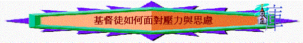

引言：
「心中喜樂，面帶笑容；心裡憂愁，靈被損傷。」箴15:13
「撒在荊棘裡的，就是人聽了道，後來有世上的思慮、錢財的迷惑把道擠住了，不能結實。」太13:22
～信徒若面對重壓，有過份思慮，不單影響身體，也會靈受損，神的道也會被擠住，不能在他身上好好成長！
一.
壓力的定義(http://www.cgmh.com.tw/new1/new9004-112.htm)
「壓力」到底是甚麼？嚴格的說法，壓力為個人對外在環境的主觀感受與評估；最通俗的定義就是：壓力是看你怎麼想的，你認為是就是，不是就不是。然而，每天或是經常地生活在壓力中會有什麼影響呢？很簡單來說，可能會耗盡心力。壓力造成的徵候，在生理上，明顯的症狀有心跳加快、流汗增加、肌肉緊張及呼吸速度與呼吸方式的改變；另外有些並不是立即可以感受到的，譬如免疫系統及內分泌失調、血壓及血糖上升、消化系統功能改變
(腹瀉或便秘) 及膀胱肌肉鬆弛等。某些疾病或生理機能失調，也與壓力有關，包括心臟病、癌腫、偏頭痛、胃潰瘍、高血壓、乾癬、呼吸道疾病、慢性下背痛及性功能障礙等。
二.壓力的等級(http://www.socialwork.com.hk/psychtheory/psy014e9.htm)
一個人在面對壓力時的行為,
部份取決於他所曾經驗過的壓力的層級. 我們把這反應模式分成
mild, moderate, severe 三個等級, 他們是相當有差異性的.
1.Mild ( 輕微的壓力 ) :
A. 輕微的壓力會激活及加強生物面上那些有意義的行為,
如吃, 侵犯 ,和性行為.
B. 輕微壓力也造成生物提高警覺性,
能量被集中, 表現也加強.
C. 這可能導向一個更精明,
對威脅來源更警覺, 尋求他人的協助和支持,
學習更好的態度及應對的技巧.
不斷的輕微壓力可能導致一些適應不良的行為,
如易怒, 注意力不集中,
生產力下降, 慢性的不耐煩.
但無論如何, 這沒有造成問題,因為它們只偶爾發生,
還在自我控制的能力之內.
2.Moderate ( 中度的壓力
) :
A.中度的壓力的特性就是會破壞行為,
尤其是那些需要熟練技巧的行為 . 演講,
演奏, 就是遭遇中度壓力典型的例子.
B.當面對挫折時
,也可能發生明顯的衝動和發怒.
C.中度的壓力會導致反複的動作,
如在房裏來回走動, 繞圈子.
這種反複的動作其實是為了適應壓力而生的,
可以幫助降低壓力的刺激 , 減少對環境的高敏感度.
3.Severe ( 嚴重的壓力
) :
A.嚴重的壓力會抑制行動,
而導致完全的不動.
B. 一個
learned helplessness 的實驗中, 狗或人都會因此而發生
immobility, 但也有人說, 這是一種自我保護的機制,
表示生物在嘗試消除外來的有害壓力. 可是這還不是定論.
遭受壓力的人在情緒上的表現.
大多數的壓力都是不好的,
只能產生負面的情緒, 會使當事者嘗試逃避壓力的來源,
以直接或間接的方法來減少壓力的作用. 一些壓力性的生活事件,
如和伴侶或朋友分離, 是造成
depression 的首要原因. 通常來說被遺棄比主動的提出分手更能造成
depression.是否經歷一系列的壓力事件也可做為判定
depression 的參考.
強暴, 亂倫事件的受害者, 嚴重交通意外或墜機, 戰後的退伍軍人,以及其它遭受創傷的人, 在情緒上會表現出 postraumatic stress disorder (PTSD). PTSD 是一種遲發的壓力反應, 且會經常反複的發作, 即使事情已過了很久. 再者, 受害者會在日常生活裏經驗一種情緒上的麻木感, 對人也有很深的疏離感. 最後, 這種情緒上的痛苦將會導致一些症狀的增加, 如睡眠問題, 對存活有罪惡感, 注意力不能集中, 及誇大的驚愕反應. 臨床上把 PTSD 定意為, 在一個死亡邊緣所學習到的條件反應.
三.信徒面對的壓力與思慮
1.工作
「人在日光之下勞碌累心，在他一切的勞碌上得著什麼呢？因為他日日憂慮，他的勞苦成為愁煩，連夜間心也不安。這也是虛空。」傳2:22-23
A.勞碌：「做極也做不完」「很辛苦」
B.思慮：「不知明天會否有這份工」
C.愁煩：「不曉得怎做、怎辦？」「客太麻煩、不想面對他」
D.不安：「老闆明天會對我有甚麼說話」
2.錢財
「不要為自己積儹財寶在地上；地上有蟲子咬，能銹壞，也有賊挖窟窿來偷。」太6:19
「所以我告訴你們，不要為生命憂慮吃什麼，喝什麼；為身體憂慮穿什麼。生命不勝於飲食嗎？身體不勝於衣裳嗎？」太6:25
「耶穌說：「你若願意作完全人，可去變賣你所有的，分給窮人，就必有財寶在天上；你還要來跟從我。」那少年人聽見這話，就憂憂愁愁的走了，因為他的產業很多。」太19:21-22
「貪財是萬惡之根。有人貪戀錢財，就被引誘離了真道，用許多愁苦把自己刺透了。」提前6:10
A.怕失去
：會否股市下跌
B.怕沒有/不夠：買樓供樓、突然失業、有了小朋友支出大
C.想更多
：股市暢旺、投機
D.心掙扎
：在信仰與金錢上有掙扎、奉獻問題
E.引來罪 ：貪、離開神
3.學業
「我兒，還有一層，你當受勸戒：著書多，沒有窮盡；讀書多，身體疲倦。」傳12:12
A.讀不完
B.感疲乏
C.其它：開學/成績
4.事奉重壓
~摩西面對以色列人的怨言，而產生以下事奉的重壓
A.厭棄托負
「摩西對耶和華說：「你為何苦待僕人？我為何不在你眼前蒙恩，竟把這管理百姓的重任加在我身上呢？」民11:11
〜因著眾百姓的壓力，使到摩西的情緒出現，因而厭棄神的托負，為何把這管理的責任加在他身上！
B.厭棄百姓
「這百姓豈是我懷的胎，豈是我生下來的呢？你竟對我說：『把他們抱在懷裡，如養育之父抱吃奶的孩子，直抱到你起誓應許給他們祖宗的地去。』」民11:12
〜本來深愛同胞的摩西，也因壓力感覺這百姓不屬於他，和他沒？的！
C.厭棄自己
「你這樣待我，我若在你眼前蒙恩，求你立時將我殺了，不叫我見自己的苦情。」民11:15
〜甚至去到求死
四.如何面對
1.承認有限
A.掌握不到
a.金錢
「你豈要定睛在虛無的錢財上嗎？因錢財必長翅膀，如鷹向天飛去。」箴23:5
b.明天
「所以，不要為明天憂慮，因為明天自有明天的憂慮；一天的難處一天當就夠了。」太6:3
c.神的作為
「我見神叫世人勞苦，使他們在其中受經練。神造萬物，各按其時成為美好，又將永生（原文作永遠）安置在世人心裡。然而神從始至終的作為，人不能參透。」傳3:10-11
B.思想有限
「你們那一個能用思慮使壽數多加一刻呢（或作：使身量多加一肘呢）？」太6:27
C.身體有限
「我兒，還有一層，你當受勸戒：著書多，沒有窮盡；讀書多，身體疲倦。」傳12:12
D.工作不完
「我兒，還有一層，你當受勸戒：著書多，沒有窮盡；讀書多，身體疲倦。」傳12:12
E.敬畏真神
「這些事都已聽見了，總意就是：敬畏神，謹守他的誡命，這是人所當盡的本分（或作：這是眾人的本分）。」傳12:13
～承認自己有限，不要看自己過於所當看的，人也會感到鬆一鬆（當然要相信自己有限，但神卻是無限的）
2.做好本份
A.殷勤作工
「凡你手所當做的事要盡力去做；因為在你所必去的陰間沒有工作，沒有謀算，沒有知識，也沒有智慧。」傳9:10
～與其思慮太多，不如做好自己的本份，當做完自已看為緊張的事，有事也是治療壓力的好方法
B.預備明天
「你要分給七人，或分給八人，因為你不知道將來有什麼災禍臨到地上。」傳11:2
「早晨要撒你的種，晚上也不要歇你的手，因為你不知道哪一樣發旺；或是早撒的，或是晚撒的，或是兩樣都好。」傳11:6
～好好努力做好本份，也預備明天，當困難來時，也不會手忙腳亂
C.積極今天
「每早晨，這都是新的；你的誠實極其廣大！」哀3:23
「所以，不要為明天憂慮，因為明天自有明天的憂慮；一天的難處一天當就夠了。」」太6:34
～積極做好今天的事，不要為明天憂慮，天自有明天的憂慮；一天的難處一天當就夠了！
3.享受福氣
A.要有休息
「天地萬物都造齊了。到第七日，神造物的工已經完畢，就在第七日歇了他一切的工，安息了。神賜福給第七日，定為聖日；因為在這日，神歇了他一切創造的工，就安息了。」創2:1-3
～其中一種治療過份壓力的方式就是休息，神創造天地，也讓人有休息的，好好睡一覺，好好享受假期
～人的集中力平均是40-45min，之後有休息或轉移作其他的事也可舒緩壓力
B.得享安靜
「滿了一把，得享安靜，強如滿了兩把，勞碌捕風。」傳4:6
～在忙碌的生活中，多做一些事情（例如深呼吸，觀看大自然，祈禱．．．．．）讓心中靜一靜
C.學習享福
「人莫強如吃喝，且在勞碌中享福，我看這也是出於神的手。論到吃用、享福，誰能勝過我呢？」傳2:24-25
～享受神所賜的福，也可令人感到快樂、安息
a.食物之福
「你只管去歡歡喜喜吃你的飯，心中快樂喝你的酒，因為神已經悅納你的作為。」傳9:7
～好好享受每一餐午膳或晚膳，這是人在勞碌中的份
b.家庭之福
「在你一生虛空的年日，就是神賜你在日光之下虛空的年日，當同你所愛的妻，快活度日，因為那是你生前在日光之下勞碌的事上所得的分。」傳9:9
4.相信天父
「你們看那天上的飛鳥，也不種，也不收，也不積蓄在倉裡，你們的天父尚且養活他。你們不比飛鳥貴重得多嗎？太6:26
5.全然交託
「應當一無掛慮，只要凡事藉著禱告、祈求，和感謝，將你們所要的告訴神。神所賜、出人意外的平安必在基督耶穌裡保守你們的心懷意念。」腓4:6-7
「你們要將一切的憂慮卸給神，因為他顧念你們。」彼前5:7
6.重新次序
「因為你的財寶在那裡，你的心也在那裡。」太6:21
「一個人不能事奉兩個主；不是惡這個，愛那個，就是重這個，輕那個。你們不能又事奉神，又事奉瑪門（瑪門：財利的意思）。」太6:24
「所以，不要為明天憂慮，因為明天自有明天的憂慮；一天的難處一天當就夠了。」」太6:34
7.肢體支持
「但那安慰喪氣之人的神藉著提多來安慰了我們；不但藉著他來，也藉著他從你們所得的安慰，安慰了我們；因他把你們的想念、哀慟，和向我的熱心，都告訴了我，叫我更加歡喜。」林後7:6-7
8.尋求幫助
A.輔導
B.藥物
C.書藉
D.小組